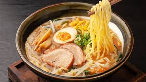

Ramen

Bahan-bahan (Untuk 4 porsi):
-
4 porsi mie ramen (mie telur keriting, lebih enak pakai homemade/frozen)
-
2 liter air (untuk kuah)
-
500 gr tulang babi (bisa juga tulang ayam sebagai alternatif)
-
200 gr daging babi bagian perut (pork belly) untuk chashu
-
4 butir telur (untuk ajitsuke tamago / telur setengah matang marinasi)
-
100 ml kecap asin (shoyu) + 50 ml mirin + 50 ml sake (untuk marinasi)
-
Nori (rumput laut kering) secukupnya
-
Daun bawang (iris halus) + jagung manis pipil (opsional)
Bumbu & Bahan Tambahan (Rahasia Umami):
-
5 siung bawang putih (geprek)
-
2 ruas jahe (iris tipis)
-
2 sdm miso paste (untuk rasa gurih fermentasi)
-
1 sdt lada putih bubuk
-
Garam secukupnya
-
Minyak wijen (untuk aroma) – ini rahasia wangi khas ramen Jepang
Cara Masak:
-
Membuat Chashu (Daging Topping): Gulung daging babi perut, ikat dengan tali. Rebus dengan 100 ml kecap asin, 50 ml mirin, 50 ml sake, bawang putih, dan jahe hingga empuk (sekitar 1 jam). Dinginkan, lalu iris tipis.
-
Membuat Ajitsuke Tamago (Telur Marinasi): Rebus telur selama 6-7 menit (putih matang, kuning setengah cair). Rendam dalam sisa cairan chashu semalaman di kulkas.
-
Membuat Kuah Tonkotsu: Rebus tulang babi dalam 2 liter air dengan api kecil selama 4-6 jam (atau gunakan pressure cooker 1,5 jam) hingga kuah berwarna putih susu pekat. Saring kuah.
-
Menyeduh Kuah: Panaskan kuah tonkotsu, tambahkan miso paste, lada putih, dan garam secukupnya. Aduk rata. Terakhir teteskan minyak wijen.
-
Penyajian: Rebus mie ramen hingga matang, tiriskan. Masukkan mie ke mangkuk, siram dengan kuah panas. Tata irisan chashu, telur setengah marinasi, nori, jagung, dan daun bawang di atasnya. Sajikan segera selagi panas.
kembali